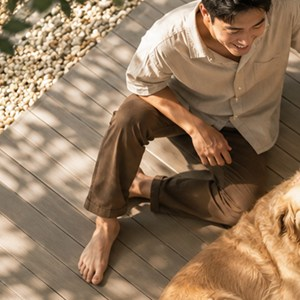
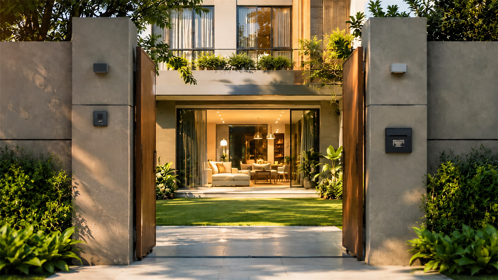
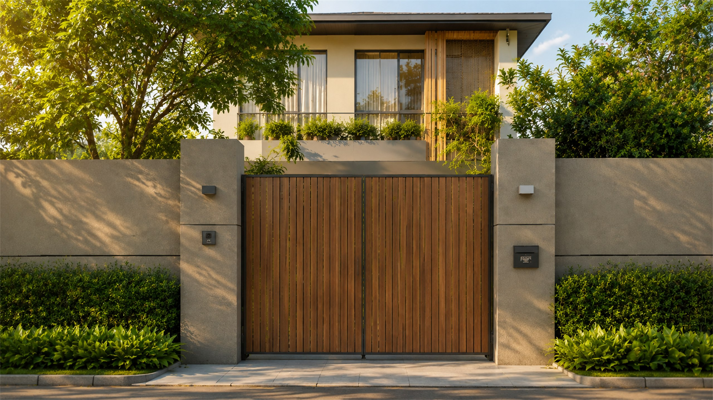
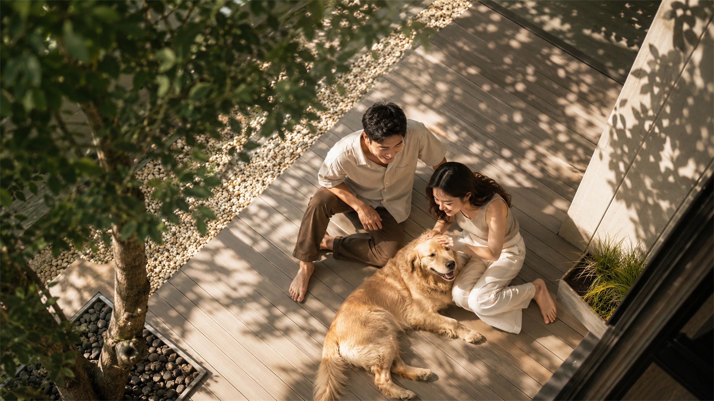
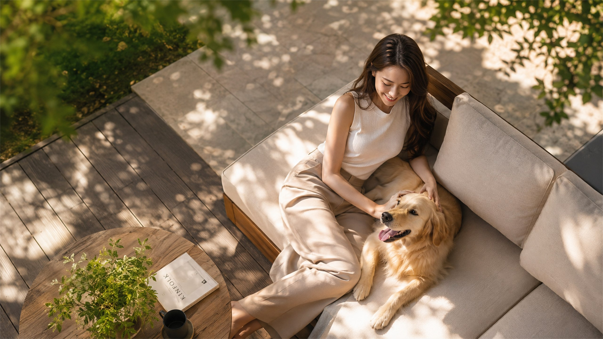
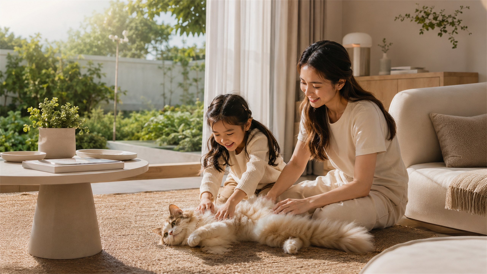
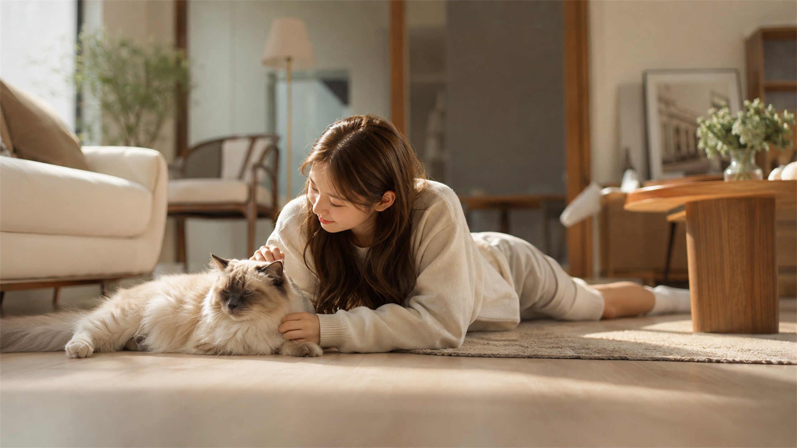
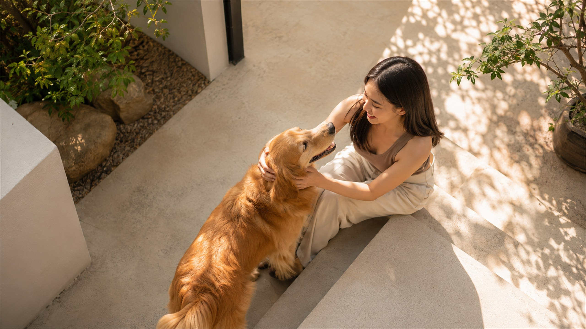
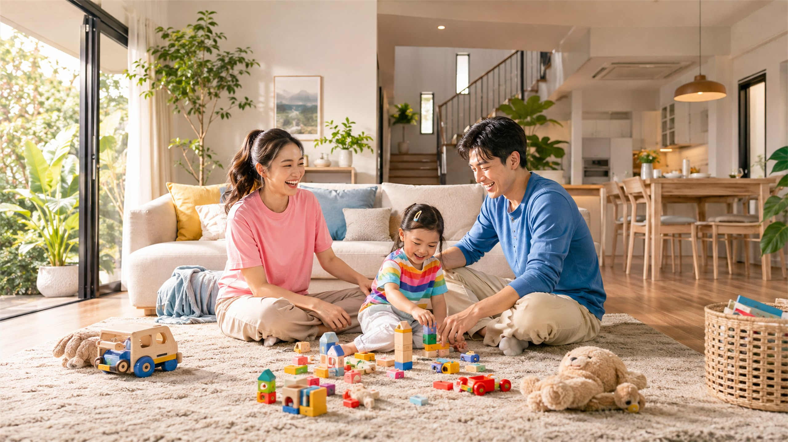

ใกล้ทางด่วน
เข้าเมืองสะดวก ใกล้ห้างและโรงเรียนในย่านเดียวกัน








จุดเริ่มต้นของคนอยากมีบ้าน — เลื่อนลงเพื่อเดินเข้าบ้านหลังนี้ไปด้วยกัน
จากหน้าบ้านที่เงียบสงบ สู่พื้นที่ที่เป็นของครอบครัวคุณจริง ๆ
เลือกทำเล เลือกแบบบ้าน แล้วให้เราดูแลตั้งแต่ยื่นกู้จนถึงวันโอน
แสงเข้าเต็มบ้าน ลมผ่านตลอดวัน ในบ้านกับสวนต่อเนื่องเป็นผืนเดียวกัน
ห้องนั่งเล่นเพดานสูง รับแดดเช้าเต็ม ๆ พื้นที่ที่ทุกคนมาเจอกันโดยไม่ต้องนัด
โซฟา พรม แสงบ่าย และเพื่อนตัวโปรด — ความสบายที่วัดกันไม่ได้ด้วยตารางเมตร
บางวันไม่ต้องทำอะไรเลยก็ได้ นั่นแหละคือเหตุผลที่ต้องมีบ้านเป็นของตัวเอง
ทำงาน พักผ่อน อยู่กับคนที่รัก — จบได้ในบ้านหลังเดียว